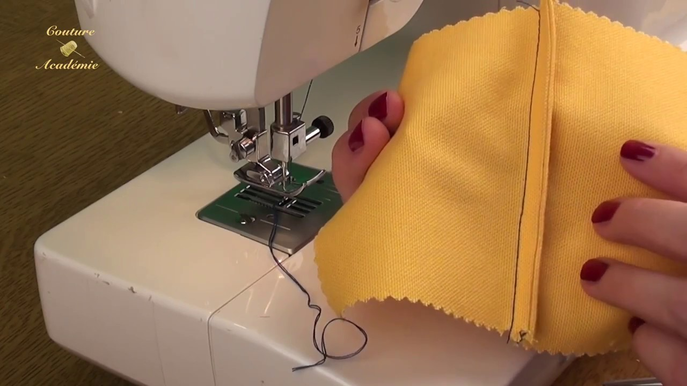

sorte des coutures
- 1.La couture anglaise : ce type de couture permet de faire de belles finitions sur le vêtement sans l’utilisation d’une surjetteuse. ...

- 2.La couture française ou parisienne : elle associe deux type de couture, l’anglaise et la rabattue. ...
- 3.La couture ouverte : c’est celle qu’on utilise le plus utilisée dans les ménages pour sa facilité de réalisation. ...
SINIFICATION D'UNE SURJETTEUSE: C’est une machine à coudre qui fait plusieurs piqûres à la fois. Cette machine reste aussi bien d’usage familial qu’industriel. En effet, elle permet d’assembler rapidement deux morceaux de tissu sans surfilage, en un seul passage.
LE STYLISME: La personne exerçant ce métier est appelée un styliste ou créateur de mode. Le stylisme est un métier créatif. Il peut se faire avec des outils de dessin traditionnels, mais se fait de plus en plus avec l'aide d' outils informatiques.
sorte des machine a coudre:
une machine electrique
avantage d'une machine electrique:
machines électroniques offrent aussi un plus grand nombre de fonctions (tel que les motifs de couture) et une plus grande rapidité de fonctionnement. Les machines à coudre pour débuter l'art de la couture ne manquent pas.
une machine a main
avantage d'une machine a main:
vous avez la possibilité d’en faire de même. Quand bien même avoir une machine à coudre constitue un investissement important, elle vous offre de multiples avantages.
inconvénient:il peut fatiguer les yeux et les mains.
la machine a pedale:
avantage:cette machine met également à votre service une pédale pour les fois où vous avez particulièrement besoin de vous concentrer sur la couture.